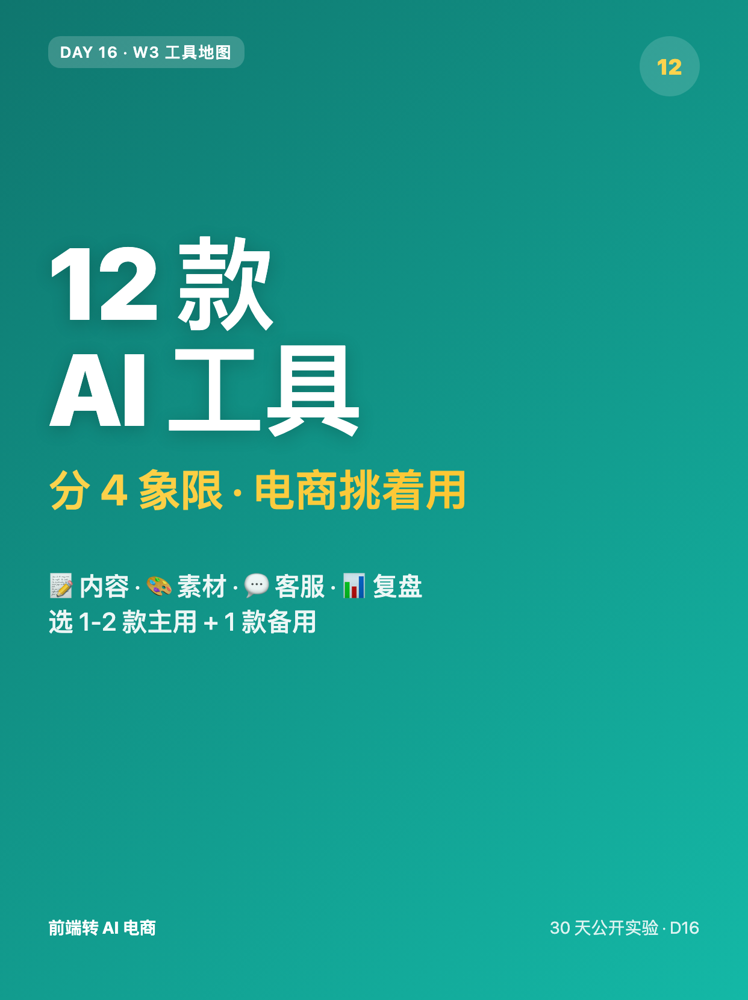
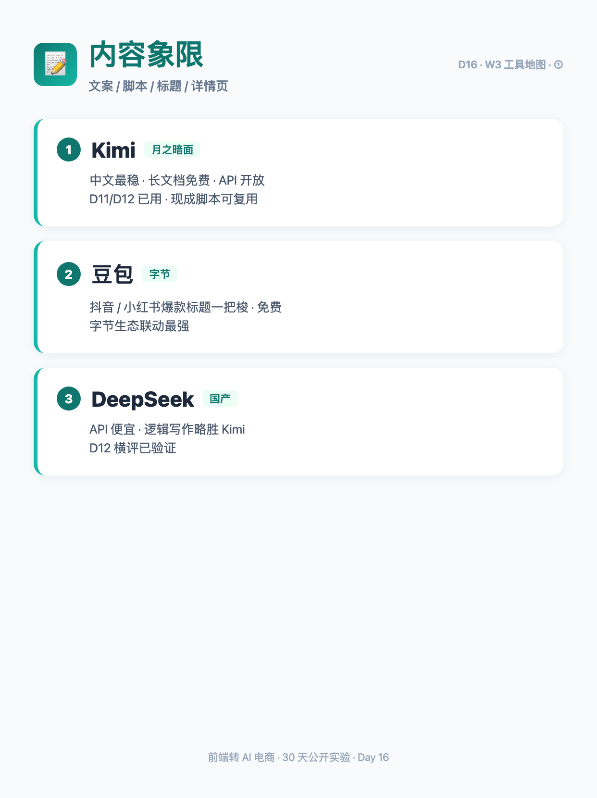
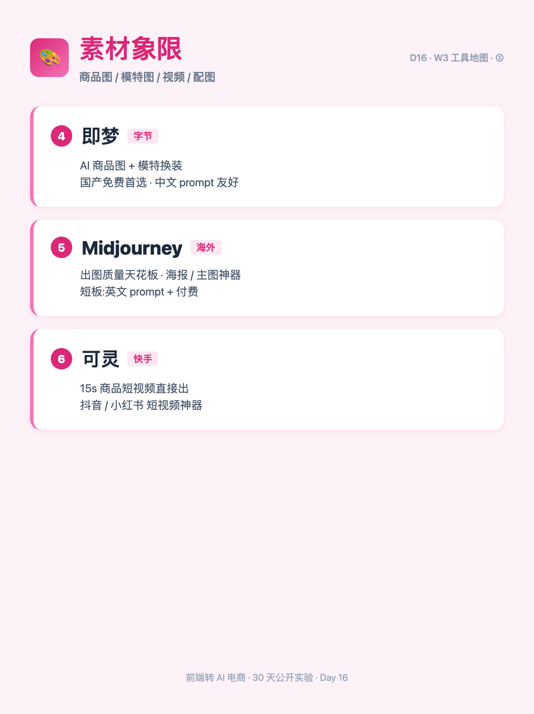
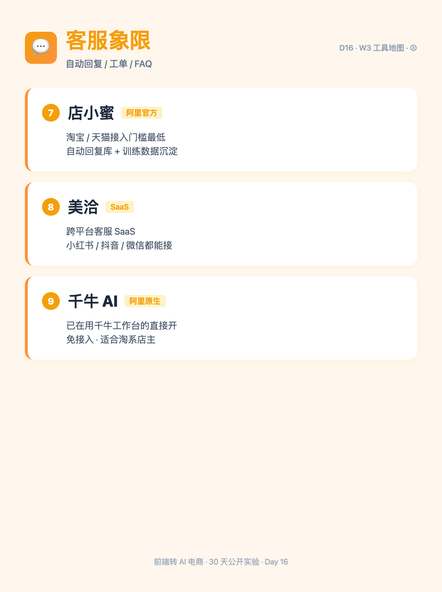
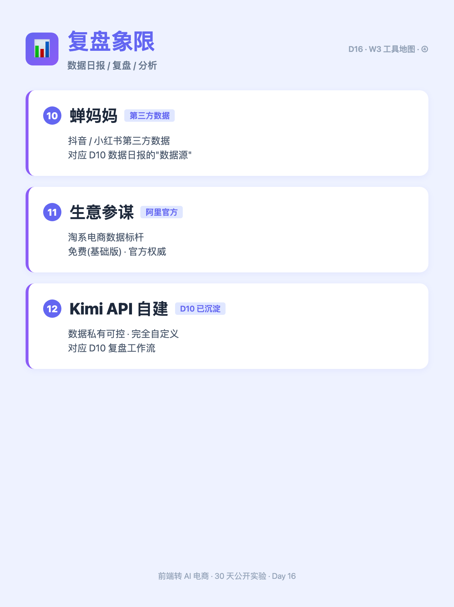
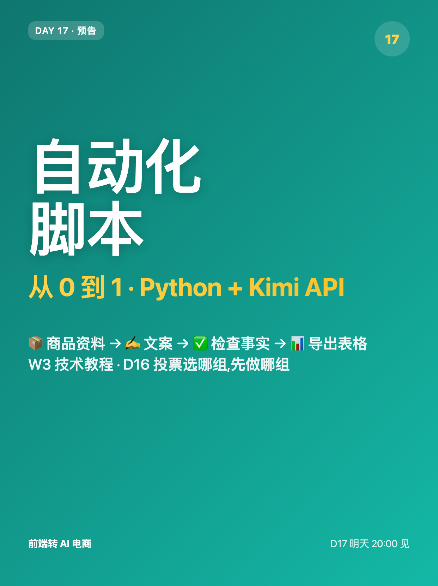

使用说明:所有内容已按发布标准预排好,发布前请用最下方 3 个复制按钮。
6 张图按顺序上传,标题"12 款 AI 工具分 4 象限"(XHS 上限 20 字 ✓)。
配图已通过 HTML+Chrome headless 截图 1242×1660 PNG 生成(中文 100% 清晰,沿用 D14/D15 经验)。






12 款 AI 工具 · 4 象限分类
做电商选 AI 工具,跟选手机一样——不是越贵越好,是要按场景挑。 D15 讲了 3 类典型场景,今天反过来从工具视角把所有可能用上的摆出来。 ────── 📝 内容(文案/脚本/标题)────── ① Kimi(月之暗面):中文最稳,长文档免费,API 开放 ② 豆包(字节):抖音/小红书爆款标题一把梭,免费 ③ DeepSeek:API 便宜,逻辑写作略胜 Kimi ────── 🎨 素材(商品图/模特/视频)────── ④ 即梦(字节):AI 商品图 + 模特换装,国产免费首选 ⑤ Midjourney:出图质量天花板,海报/主图神器 ⑥ 可灵(快手):15s 商品短视频直接出 ────── 💬 客服(自动回复/工单)────── ⑦ 店小蜜(阿里官方):淘宝/天猫接入门槛最低 ⑧ 美洽:跨平台 SaaS,多店铺一套系统搞定 ⑨ 千牛 AI:已在用千牛工作台的直接开 ────── 📊 复盘(数据/分析)────── ⑩ 蝉妈妈:抖音/小红书第三方数据 ⑪ 生意参谋(阿里官方):淘系电商数据标杆 ⑫ Kimi API + 自建脚本:数据私有可控,完全自定义 ────── 💡 工具不是越多越好 ────── D9/D10/D11 工作流只用了 3 款就够。 选 1-2 款主用 + 1 款备用,比囤 12 款强。 ────── ⚠️ 选型的 3 个标准 ────── ✅ 中文友好(国内可直连 + 中文 prompt 稳) ✅ 有免费档(能跑通流程再付费) ✅ 能"工作流化"(不只能单次用) ────── 互动:你最常用哪款? ────── 评论告诉我 ↓ 下周 3 篇深度横评,投票选哪 3 款? 🅰️ 内容组(Kimi / 豆包 / DeepSeek) 🅱️ 素材组(即梦 / Midjourney / 可灵) 🅲️ 客服组(店小蜜 / 美洽 / 千牛 AI) 🅳️ 复盘组(蝉妈妈 / 生意参谋 / Kimi API) 关注我,看 30 天跑完我会得出什么结论 🌱
#前端转AI电商
#AI工具
#工具清单
#电商工具
#工具向
#收藏向
♡ 收藏
💬 评论
↗ 分享
📋 一键复制
📊 D16 数据复盘
工具视角定位: 承接 D15 的"场景视角"反过来摆工具箱 —— 12 款工具 / 4 象限 / 每象限 3 款
选型标准: 中文友好 + 有免费档 + 能工作流化(我自己用过的 3 条标准,不空谈)
与 D15 的关系: D15 用"3 类典型场景"讲痛点+工作流效果,D16 用"4 象限 12 工具"讲工具全景 —— 一个向左(场景),一个向右(工具)
互动钩子: 评论投票"下周深度横评哪 3 款" —— 把清单帖转成"用户共创选题池"
🚀 发布前 15 分钟 SOP
- 打开小红书 App → 创建笔记
- 选 6 张图(封面 1 + 内页 5),按顺序排好
- 选 3:4 竖图
- 标题:12 款 AI 工具 · 4 象限分类(XHS 上限 20 字符 ✓,17 字符)
- 正文:点"复制正文"按钮粘贴
- 加 6 个标签
- 选发布时间:周二 20:00-21:00
- 发布
📈 发布后 24 小时 SOP
| 时间 | 动作 | 目标 |
|---|---|---|
| 10 分钟 | 自己评论投票("W3 工具地图 · 你最常用哪款 · 投票选下周横评") | 激活引导型评论区 |
| 30 分钟 | 每条评论认真回复(尤其"常用款"留言要追问 1-2 句) | 收集 D17 横评素材 |
| 2 小时 | 截图保存 D16 数据 | W3 中段素材 |
| 6 小时 | 看一次数据(曝光/收藏/评论/投票分布) | 判断是否二次推 |
| 24 小时 | 统计投票分布 + 用户常用款留言 → D17 横评选题 | D17 深度版方向 |
🎯 Day 16 数据目标
| 指标 | 目标 | 备注 |
|---|---|---|
| 曝光 | ≥ 2000 | 工具清单类 + 收藏向天然高曝光 |
| 收藏率 | ≥ 12% | 工具清单收藏率天然高(用户要回来查) |
| 评论 | ≥ 60 | 投票 + 常用款留言 = 双钩子 |
| 涨粉 | ≥ 80 | W3 中段持续涨粉 |
| D17 钩子 | 投票分布出 Top 3 象限 | D17 选横评方向 |
💡 关键设计点
1. 标题 = 数字 + 象限 + 场景词
- "12 款" = 数字冲击(清单类天然带"全")
- "4 象限" = 框架暗示(用户知道有结构)
- "电商挑着用" = 场景锚定(不是泛 AI 工具帖)
- 字数 16 字,XHS 上限 20 ✓
2. 正文 = 钩子 + 4 象限 + 标准 + 投票
- 开头 2 句(场景化锚定:选手机 → 按场景挑工具)
- 4 象限 × 3 工具(每象限 3 行,品牌 + 一句话定位)
- "工具不是越多越好"(呼应 D15"工作流化"主题,但角度是工具选择)
- 3 条选型标准(我自己用过的,降低"列清单"嫌疑)
- 投票 + 常用款留言(双钩子,收集 D17 横评素材)
3. 与 D15 的角度区分
- D15:"3 类典型场景"(场景视角)→ 痛点 + 工作流 + 节省时间
- D16:"12 款 AI 工具"(工具视角)→ 选型 + 标准 + 横评预告
- 不重复: 不写"5-10h/周"区间(那是 D15 的)、不写"评论扣 1 选场景"(那是 D15 的)
4. 图文对应
- 图 01 = 封面(墨绿底 + "12 款 AI 工具"大字 + 红色"4 象限"副标 + "电商挑着用"小字)
- 图 02 = 内容象限(3 卡片:Kimi / 豆包 / DeepSeek + 一句话定位)
- 图 03 = 素材象限(3 卡片:即梦 / Midjourney / 可灵)
- 图 04 = 客服象限(3 卡片:店小蜜 / 美洽 / 千牛 AI)
- 图 05 = 复盘象限(3 卡片:蝉妈妈 / 生意参谋 / Kimi API 自建)
- 图 06 = Day 17 预告(墨绿底大字"Day 17 · 自动化脚本从 0 到 1" + 副标"Python + Kimi API")
⚠️ 注意事项
- 不是工具横评——本篇是"工具全景",深度横评留给 D17-D19(投票 Top 3 象限)
- 每象限 3 款,不是穷举——避免"为什么没有 XX"的质疑,标题用"12 款"明示"挑出来的主用"
- 选型标准必须标"我自己用过"——不空谈,否则像营销文
- 互动钩子是"投票 + 留言"——不只是投票,要追问"你最常用哪款"的具体使用场景
- 配图沿用 D14/D15 经验—— HTML+Chrome headless 截图,中文 100% 清晰(避开 mmx 中文乱码)
- 正文用"我"视角而非"你"—— "我自己用过的 3 条标准"而不是"你应该"
- 不和 D15 重复—— D15 用了"5-10h/周"、"评论扣 1 选场景"、"3 类典型场景",本篇全部回避